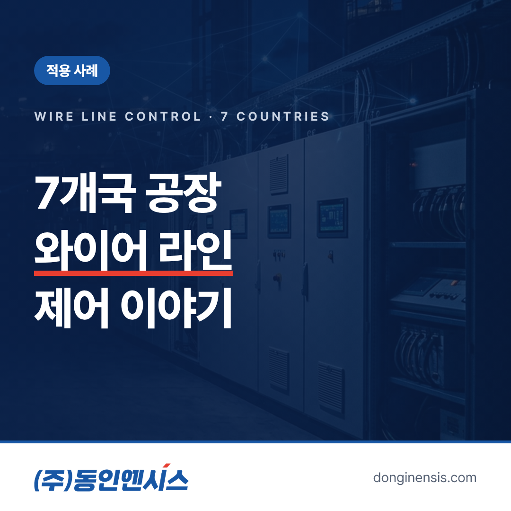
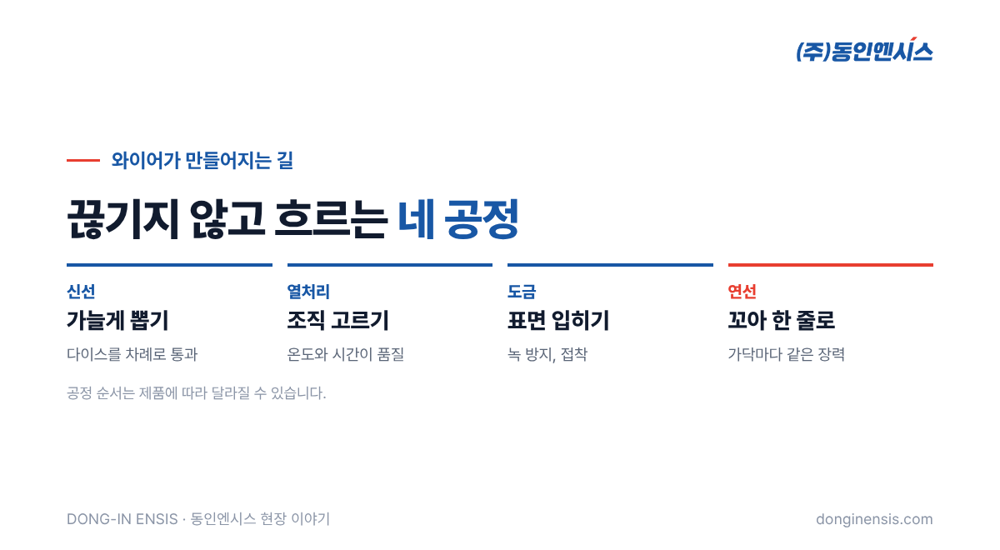
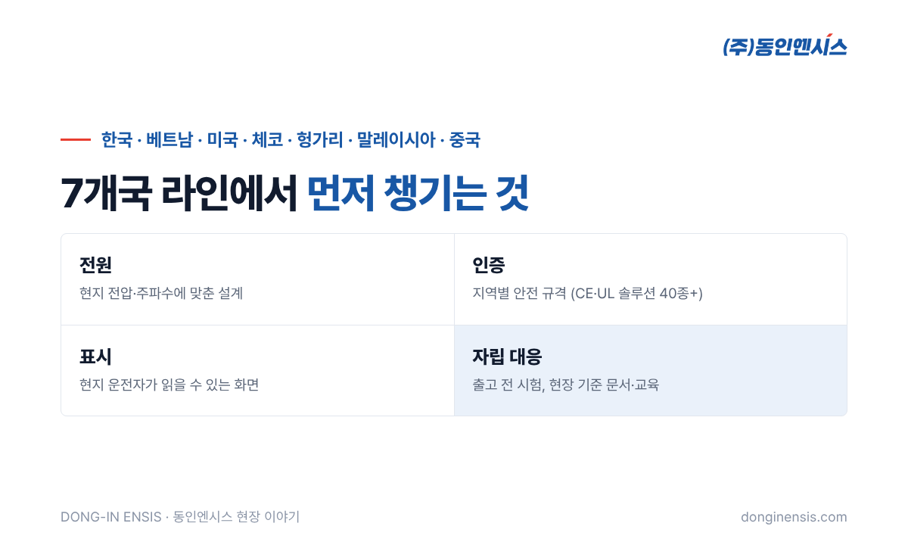

건물 엘리베이터를 매단 줄, 다리를 붙잡는 케이블, 타이어 속을 받치는 가는 강선. 모두 쇠를 길고 가늘게 뽑아 꼬아 만든 와이어입니다. 같은 와이어가 어느 나라 공장에서 만들어지든 똑같은 품질을 내야 한다면, 라인을 움직이는 제어시스템도 나라를 가리지 않고 같은 기준으로 움직여야 합니다. 동인엔시스는 1991년부터 제어반을 설계·제작해 오며 KOS·고려제강(Kiswire)의 와이어 라인 제어를 한국, 베트남, 미국, 체코, 헝가리, 말레이시아, 중국 7개국에서 맡았습니다. 그 경험을 바탕으로 와이어 생산라인 제어에서 무엇이 중요한지 정리해 보겠습니다.
와이어 공장의 라인은 크게 네 가지 공정으로 나눌 수 있습니다. 동인엔시스가 제어를 맡은 라인도 이 네 가지입니다.
공정마다 쓰는 설비는 다르지만 공통점이 있습니다. 선이 끊기지 않고 길게 이어져 흐른다는 것입니다. 그래서 어느 한 곳이 박자를 놓치면 라인 전체가 영향을 받습니다.

신선기에서는 선이 다이스를 하나 지날 때마다 가늘어지는 만큼 길어지고, 그만큼 빨라집니다. 다음 단을 감는 드럼은 앞 단보다 정확히 그만큼 더 빨리 돌아야 합니다. 조금만 느리면 선이 늘어지고, 조금만 빠르면 끊어집니다. 여러 대의 모터를 인버터로 하나의 박자에 묶어 돌리는 것이 와이어 라인 제어의 기본입니다.
연선기에서는 여러 가닥이 같은 힘으로 당겨져야 꼬임이 고르게 나옵니다. 한 가닥만 느슨하면 완성된 와이어의 모양과 강도가 달라집니다. 감는 쪽과 푸는 쪽이 서로 힘을 주고받는 균형을 제어가 계속 맞춰 줍니다.
열처리와 도금은 온도와 시간이 품질을 좌우합니다. 선이 지나가는 속도가 바뀌면 열을 받는 시간도 달라지니, 라인 속도와 온도 제어가 함께 움직여야 합니다. 라인을 빠르게 돌리면 생산량은 늘지만 선이 열을 받는 시간은 짧아지므로, 그만큼 온도를 조정하거나 속도 상한을 두는 식으로 두 값을 짝지어 다룹니다.
연속 공정에서 정지는 단순히 '잠깐 멈춤'으로 끝나지 않습니다. 선이 끊기면 다시 다이스와 드럼에 선을 꿰는 작업부터 해야 하고, 열처리 구간에 있던 선은 온도와 시간이 어긋나 불량이 되기 쉽습니다. 라인을 다시 정상 속도로 올리기까지 시간도 걸립니다.
그래서 와이어 생산라인 제어는 '잘 돌리는 것'만큼 '어떻게 멈추고 다시 세우는가'를 함께 설계합니다. 이상이 생겼을 때 여러 모터를 같은 비율로 함께 감속시켜 선이 끊기지 않게 세우는 것, 다시 기동할 때 천천히 속도를 맞춰 올리는 것이 그 예입니다. 정지 원인을 기록으로 남겨 두면 같은 원인으로 또 서는 일을 줄일 수 있습니다. 와이어 생산라인 제어에서 기록이 중요한 이유입니다.
같은 라인을 여러 나라에 세우다 보면, 설비 자체보다 그 설비를 둘러싼 조건이 먼저 다가옵니다.
| 구분 | 나라마다 달라지는 것 | 제어반에서 챙기는 것 |
|---|---|---|
| 전원 | 전압·주파수 체계 | 현지 전원에 맞춘 부품 선정과 설계 |
| 인증 | 유럽·북미 등 지역별 안전 규격 | 해당 규격을 고려한 부품·배선·문서 |
| 언어 | 운전자가 읽는 화면과 표시 | 현지 운전자가 이해할 수 있는 표시 |
| 지원 | 본사와의 거리, 시차 | 현지에서 스스로 대응할 수 있는 문서와 교육 |
동인엔시스가 CE·UL 인증 솔루션을 40종 넘게 갖추게 된 데에는 이렇게 해외로 나가는 제어반을 꾸준히 만들어 온 이력이 있습니다. 나라가 바뀌어도 같은 품질을 내려면, 설계 단계에서 그 나라의 조건을 먼저 반영해야 합니다.

해외 현장은 국내와 달리 문제가 생겼을 때 바로 달려갈 수 없습니다. 그래서 출고 전에 할 수 있는 일을 최대한 끝내 두는 것이 원칙입니다.
Photorealistic wide photo of a steel wire drawing line in a large factory: a row of large horizontal capstan drums with shiny steel wire running between them, wire coils on the floor, overhead crane, a row of light-grey electrical control cabinets along the side, industrial lighting, no people, no brand logos, no readable text. 3:2 landscape.
와이어 라인은 여러 모터가 한 박자로 움직이고, 작은 어긋남이 품질과 정지로 바로 이어지는 현장입니다. 이런 라인을 7개국에서 돌려 본 경험은 두 가지를 남겼습니다. 하나는 모터와 인버터가 어떤 상태일 때 문제가 시작되는지에 대한 감각이고, 다른 하나는 사람이 곁에 없어도 설비 상태를 알 수 있어야 한다는 절실함입니다.
지금 동인엔시스가 만드는 지능형 제어반은 바로 그 지점에서 출발했습니다. 제어반이 설비를 움직이면서 모터 온도와 전류, 진동 같은 운전 데이터를 함께 남기면, 멀리 떨어진 현장의 설비도 기록으로 살펴볼 수 있습니다. 까다로운 현장에서 쌓은 제어 경험이 데이터의 신뢰성으로 이어지는 이유입니다.
Photorealistic photo inside a Korean control panel manufacturing workshop: a tall multi-door light-grey control cabinet with doors open showing neat wiring and inverters, a Korean technician in a navy work uniform checking it with a laptop on a cart, other cabinets under assembly in background, bright even lighting, documentary style, no brand logos, no readable text. 3:2 landscape.
Q. 와이어 생산라인 제어에서 가장 까다로운 부분은 무엇인가요? 여러 대의 모터를 하나의 박자로 묶는 속도 동기와 장력 유지입니다. 선이 이어져 흐르기 때문에 한 곳의 어긋남이 라인 전체로 번집니다.
Q. 해외 공장에 들어갈 제어반도 국내에서 만드나요? 네. 국내 공장에서 설계·제작하고 시험을 마친 뒤 출고하며, 현지 시운전과 인계를 진행합니다.
Q. 와이어 말고 다른 연속 공정 라인도 하나요? 포장기계, 수지 플랜트, 서보 다축 생산설비 등 여러 제조 라인의 제어시스템을 수행했습니다. 현장 조건을 먼저 듣고 맞는 구성을 제안합니다.
Q. 이미 돌고 있는 해외 라인의 제어반 개선도 상담할 수 있나요? 가능합니다. 기존 도면과 현장 상태를 먼저 확인한 뒤, 교체 범위와 일정, 현지 시운전 방법을 함께 정합니다.
와이어 한 줄이 어느 나라에서 만들어지든 같은 품질을 내려면, 그 라인을 움직이는 제어도 같은 기준을 지켜야 합니다. 동인엔시스는 나라와 공정을 넘나들며 쌓은 그 기준을 지금의 제어반과 데이터 인프라에 담고 있습니다.
문의 051-862-3668 · dongin@donginmne.com
아래 질문 중 하나에 실제 경험으로 답해 본문 적당한 곳에 넣어 주세요. 사람이 직접 쓴 문장이 들어가면 네이버에서 저품질 위험이 줄고 노출에 도움이 됩니다.